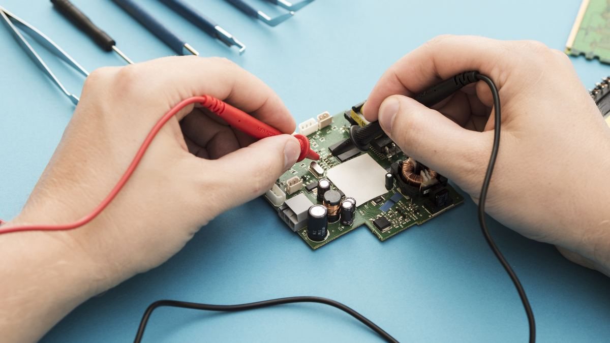
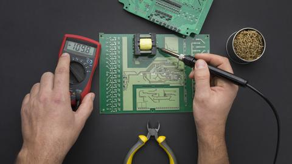
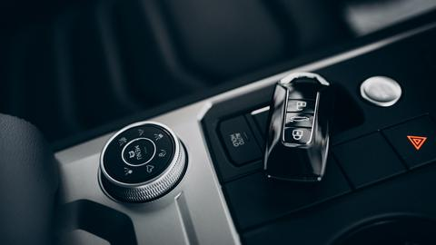
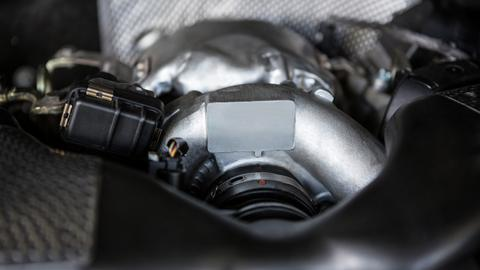
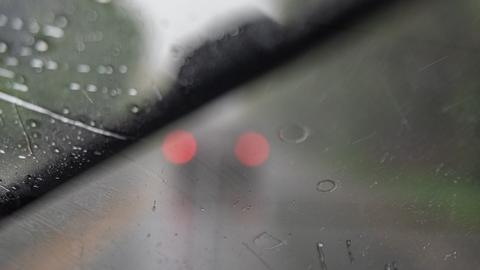

Usługa · Kielce i okolice
Naprawa i wymiana sterowników silnika, usterki immobilizera – Kielce
Rozrusznik kręci, a silnik nie zapala? Na zegarach miga kontrolka immobilizera albo tester nie łączy się ze sterownikiem? Zajmujemy się naprawą sterowników silnika, wymianą ich na sprawne egzemplarze i pracami przy immobilizerze – tak, żeby auto znów rozpoznawało Twoje kluczyki. Działamy w Kielcach i okolicy, a cenę podajemy, zanim zaczniemy pracę.

W czym pomożemy
- Auto kręci, ale nie odpala, a podejrzenie pada na sterownik lub immobilizer
- Miga kontrolka immobilizera albo pojawia się komunikat o niewykrytym kluczyku
- Brak komunikacji ze sterownikiem silnika – tester go „nie widzi”
- Naprawa sterownika silnika po zalaniu, przepięciu lub awarii
- Wymiana sterownika na sprawny i dopasowanie go do auta oraz kluczyków
- Kopia danych sterownika przed naprawą lub wymianą
Co przygotować
- Marka, model, rocznik, silnik i numer VIN
- Opis objawów i tego, co je poprzedziło: zalanie, rozruch „na kable”, wymiana akumulatora, naprawa
- Wszystkie kluczyki do auta – przy pracach z immobilizerem są potrzebne
- Jeśli masz już używany sterownik – zdjęcie jego naklejki z numerami
Nie kupuj używanego sterownika, zanim porównamy jego numerów z Twoim. Immobilizera nie wyłączamy – naprawiamy go albo dopasowujemy do auta i kluczyków.
Jak to wygląda
- 1
Opis objawów
Mówisz, co się dzieje z autem i co poprzedziło awarię. Pytamy o model, silnik i numer VIN.
- 2
Diagnostyka
Sprawdzamy zasilanie, masy, złącza i komunikację – żeby nie naprawiać sterownika, który jest sprawny.
- 3
Decyzja i cena
Mówimy, czy wystarczy naprawa, czy potrzebna jest wymiana, i czy da się to zrobić przy aucie. Cenę znasz przed pracą.
- 4
Naprawa i test
Zapisujemy dane, naprawiamy lub dopasowujemy sterownik i razem sprawdzamy rozruch na Twoich kluczykach.
Naprawa sterowników silnika – najpierw diagnostyka
Gdy auto kręci, ale nie odpala, albo tester nie może połączyć się ze sterownikiem, łatwo uznać, że „padł komputer”. Często jednak winne jest coś prostszego: słaby akumulator, skorodowana masa, przetarty przewód albo zawilgocone złącze. Dlatego naprawę sterowników zaczynamy od sprawdzenia zasilania, mas, wtyczek i komunikacji z innymi modułami. Dopiero gdy to wszystko jest w porządku, zajmujemy się samym sterownikiem.
Sterowniki psują się najczęściej po zalaniu wodą, po przepięciu – na przykład przy nieostrożnym rozruchu „na kable” w mroźny poranek – albo po latach pracy w wysokiej temperaturze i wśród drgań. Jeśli uszkodzenie da się usunąć, naprawiamy sterownik. Jeśli nie, proponujemy wymianę na sprawny egzemplarz i dopasowanie go do auta. Objawy, które mogą wskazywać na sterownik, opisujemy w poradnikach awaria sterownika silnika – objawy i auto kręci, ale nie odpala.
Immobilizer – gdy auto nie rozpoznaje kluczyka
Immobilizer pozwala uruchomić silnik tylko wtedy, gdy auto rozpozna zaprogramowany kluczyk. Gdy ta współpraca się sypie, silnik zapala na sekundę i gaśnie albo w ogóle nie rusza, a na zegarach miga kontrolka z symbolem kluczyka. Przyczyną może być sam kluczyk, antena przy stacyjce, moduł immobilizera albo sterownik silnika – zwłaszcza po jego wymianie lub naprawie.
Prace przy immobilizerze polegają u nas na znalezieniu przyczyny i przywróceniu współpracy auta z Twoimi kluczykami. Jeśli problem leży w kluczyku, przygotujemy nowy w ramach usługi dorabianie i kodowanie kluczyków, a gdy nie został żaden – zajrzyj na stronę utrata wszystkich kluczyków. Co możesz sprawdzić sam, zanim zadzwonisz, podpowiadamy w artykułach auto nie widzi kluczyka i miga kontrolka immobilizera.
Wymiana sterownika na używany – co musi się zgadzać
Używany sterownik bywa rozsądną alternatywą dla nowego, ale prawie nigdy nie działa od razu po wpięciu. Numer części i wersja oprogramowania muszą pasować do Twojego silnika i wyposażenia, a sam sterownik trzeba dopasować do immobilizera i kluczyków auta. Zanim kupisz egzemplarz z ogłoszenia, wyślij nam zdjęcie jego naklejki z numerami – porównamy je z Twoim sterownikiem i powiemy, czy wymiana ma sens.
Przed naprawą lub wymianą zapisujemy kopię danych sterownika, o ile da się je odczytać. Dzięki temu łatwiej przenieść ustawienia i dopasować nowy egzemplarz do auta. Więcej o zakupie przeczytasz w poradniku używany sterownik silnika – na co uważać, a o elektronice po kontakcie z wodą – w artykule zalany sterownik lub elektronika w aucie.
Przy aucie czy po demontażu – i czego nie robimy
Część prac wykonujemy przy samochodzie, tam, gdzie stoi – w Kielcach albo w okolicznych miejscowościach. Niektóre naprawy wymagają jednak wymontowania sterownika i pracy przy nim poza autem. Co czeka Twój samochód, powiemy po opisie objawów i diagnostyce, zanim podamy cenę. Holowanie nie zawsze jest potrzebne.
Niektórych prac nie wykonujemy bez względu na okoliczności:
- nie wyłączamy immobilizera – to zabezpieczenie przed kradzieżą, więc naprawiamy je albo dopasowujemy;
- nie wyłączamy w sterowniku filtra DPF, zaworu EGR ani układu AdBlue – przy filtrach zajmujemy się diagnostyką, regeneracją i czyszczeniem DPF;
- nie zmieniamy wskazań drogomierza – ingerencja w przebieg jest w Polsce przestępstwem.
Masz Forda lub Mazdę z importu i chcesz zmienić język czy ustawienia modułów? To osobna usługa: kodowanie Ford i Mazda.
Pytania i odpowiedzi
Czy sterownik silnika da się naprawić, czy trzeba kupić nowy?
Kupiłem używany sterownik. Wystarczy go wpiąć?
Czy możecie wyłączyć immobilizer?
Jak odróżnić usterkę kluczyka od usterki sterownika?
Czy auto trzeba przyholować?
Ile kosztuje naprawa sterownika silnika?
Kluczyki do popularnych marek
Działamy w Kielcach i okolicach
Przydatne porady

Elektronika autaAwaria sterownika silnika – objawy, przyczyny i co dalej
Auto kręci, ale nie odpala, gaśnie bez powodu albo tester nie widzi sterownika? Objawy, jakie daje awaria sterownika silnika, łatwo pomylić z innymi usterkami. Podpowiadamy, jak je rozpoznać i co zrobić dalej.
Czytaj · 4 min
Elektronika autaAuto nie widzi kluczyka – immobilizer blokuje rozruch. Co robić?
Komunikat „Nie wykryto kluczyka”, migająca kontrolka i silnik, który nie chce zapalić? Gdy auto nie widzi kluczyka, zwykle to immobilizer blokuje rozruch. Wyjaśniamy, co to powoduje i co możesz sprawdzić sam.
Czytaj · 4 min Elektronika autaAuto kręci, ale nie odpala – najczęstsze przyczyny i co sprawdzić
Rozrusznik pracuje, a silnik ani myśli zapalić? Gdy auto kręci, ale nie odpala, kilka prostych obserwacji pozwala szybko zawęzić przyczynę. Podpowiadamy, co sprawdzić i czego nie robić.
Czytaj · 4 min
Elektronika autaUżywany sterownik silnika – na co uważać przy zakupie
Używany sterownik silnika kusi ceną, ale rzadko działa od razu po wpięciu. Podpowiadamy, co sprawdzić przed zakupem, jakie numery porównać i dlaczego sterownik trzeba dopasować do Twojego auta.
Czytaj · 4 min
Elektronika autaZalany sterownik lub elektronika w aucie – co robić?
Woda pod dywanikiem, „choinka” kontrolek albo auto, które nagle nie odpala? Tak często daje o sobie znać zalany sterownik – podpowiadamy, co zrobić od razu, żeby ograniczyć szkody, i czego lepiej nie robić.
Czytaj · 4 min Elektronika auta
Elektronika autaMiga kontrolka immobilizera – co to oznacza i kiedy się martwić
Miga kontrolka immobilizera na postoju albo przy rozruchu? Czasem to zupełnie normalne, a czasem znak, że auto nie rozpoznaje kluczyka. Podpowiadamy, jak to odróżnić i co zrobić.
Czytaj · 4 minPotrzebujesz pomocy teraz?
Zadzwoń – powiemy, ile to potrwa i ile będzie kosztować, zanim wyjedziemy.